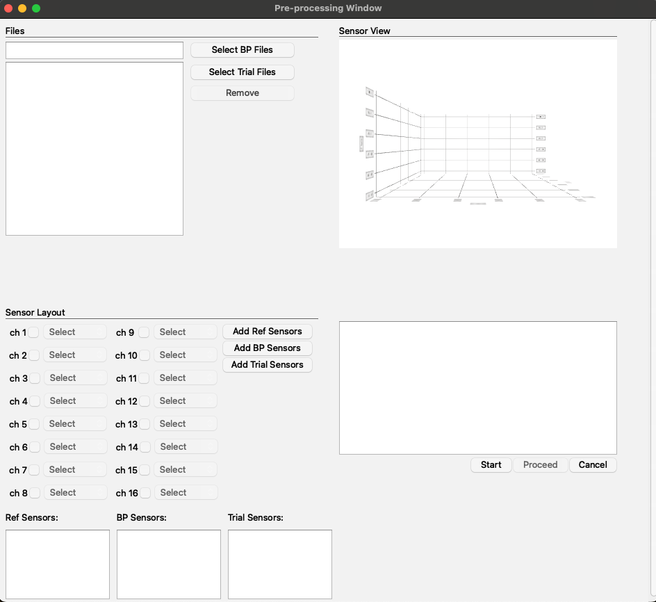
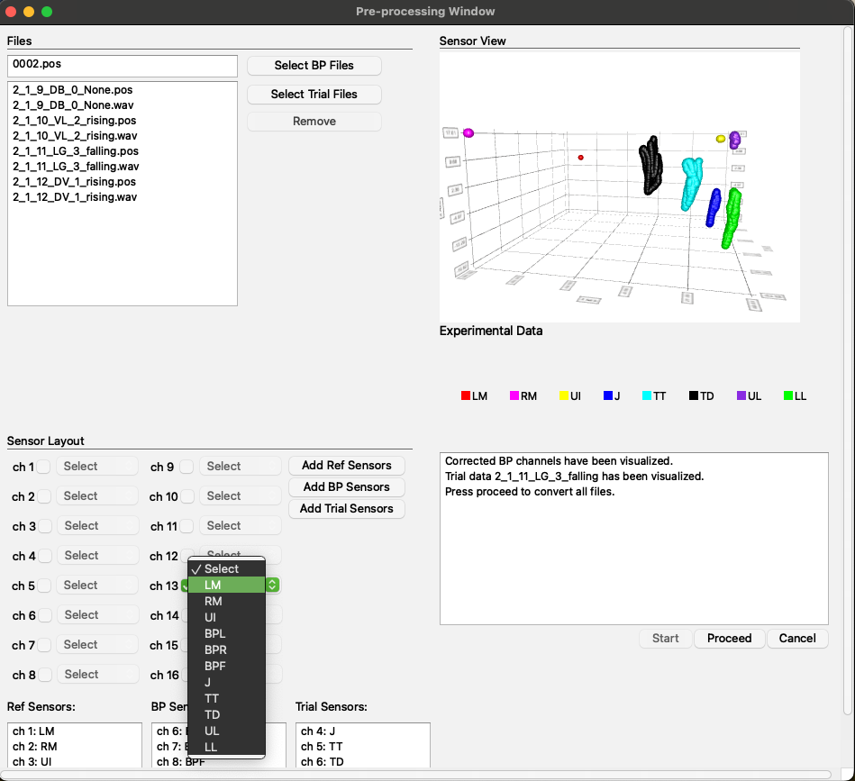
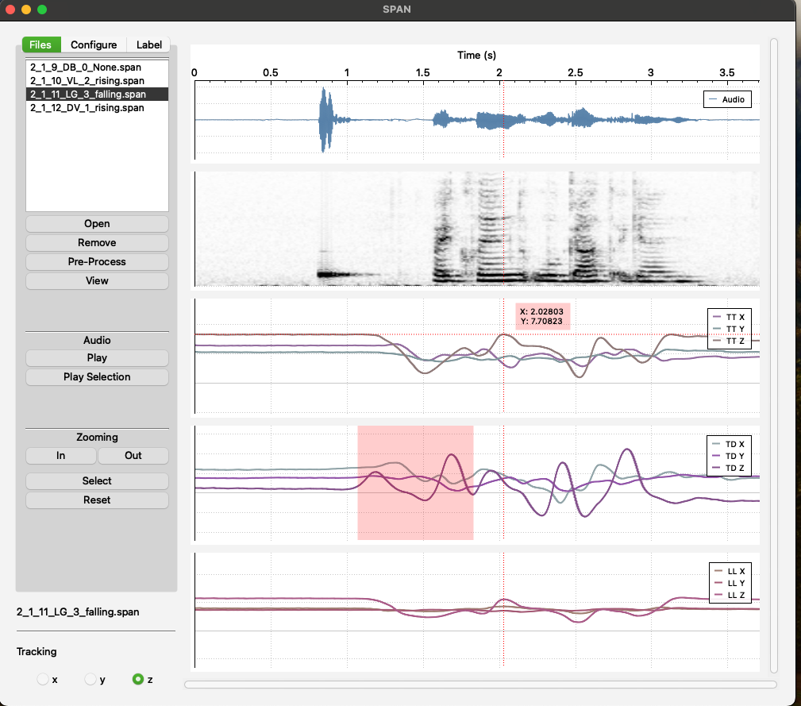
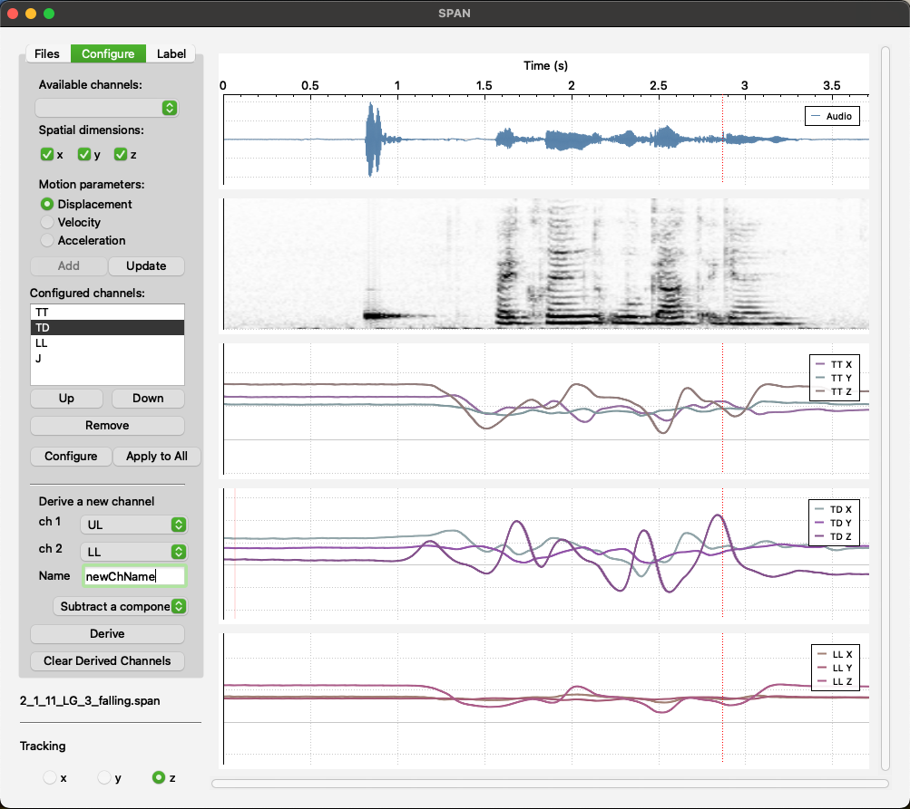
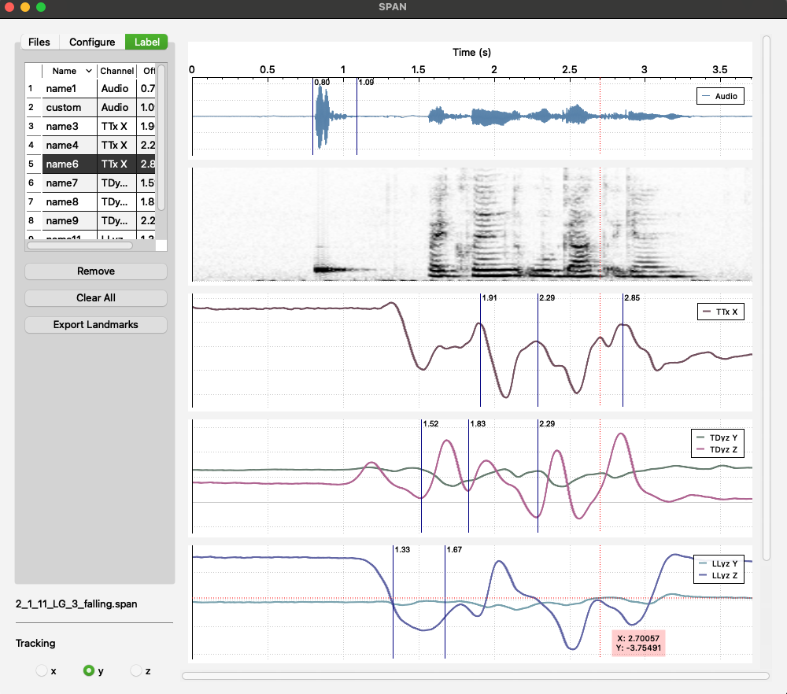

The Speech Analysys Software
- Language: C++
- Libraries: Eigen, qcustomplot, cmath, cstdlib, and many more
- Environment: Qt
- Github: Visit Repository

My application, named SPAN (Speech Analysis Software), is designed to enhance the analysis of kinematic and acoustic speech data generated by Electromagnetic Articulography (EMA) system, specifically from the AG501 Carstens systems.
This graphical user interface tool aims to improve efficiency and reliability of data analysis.
The test data set used for this application was obtained in collaboration with the UF Department of Linguistics and the Department of Speech, Language, and Hearing Sciences.
The SPAN application features two main windows:
I. PreProcessing Window
II. Main Window
I will now dive deeper into the features of each window in more detail.
The purpose of the PreProcessing Window is to handle EMA-generated files, apply biteplate correction, rotate the signal to ensure all signals are aligned within the same dimensional plane, and generate .SPAN files that contain information from both .POS and .WAV files.


Layout and Functionality:
- Top Left Corner: This section includes fields for selecting .POS and .WAV files.
- Bottom Left Corner: Here, you will find checkboxes for sensor selection along with fields to display the selected sensors.
- Top Right Corner: This area features a field for visualizing the biteplate and trial runs.
- Bottom Right Corner: This section includes a message display field to keep the user informed about changes and provides buttons for the preprocessing workflow, such as 'Start' and 'Proceed'.
The Main Window is intended for visualizing corrected signals, deriving new signals, and placing labels.
Tabs and Functionality:
- Files: In this tab, users can select .SPAN files, play the entire audio signal or just a selected part, zoom in and out, zoom in into selected area, and track the x, y, or z coordinates with a crosshair cursor.

- Configure: In this tab, users can select an available channel and configure it by choosing which signals (x, y, z) to visualize. They can also select the type of data to display (displacement, velocity, or acceleration) and add the configured channel to the channel list. Users can update the configuration of any item in the configured channel list by clicking on it and can also change the order of the visualized channels.
Additionally, users can derive a new signal by selecting two existing sensor channels and either subtracting one channel from the other or calculating the Euclidean distance between the sensor channels (with x, y, and z set to 0 in the resulting channel). Users can also remove all derived channels from the file.

- Label: This tab is designed to show a list of placed labels. Users can remove a single label or all labels. Most importantly, there is a feature to extract all labels into a CSV file.
